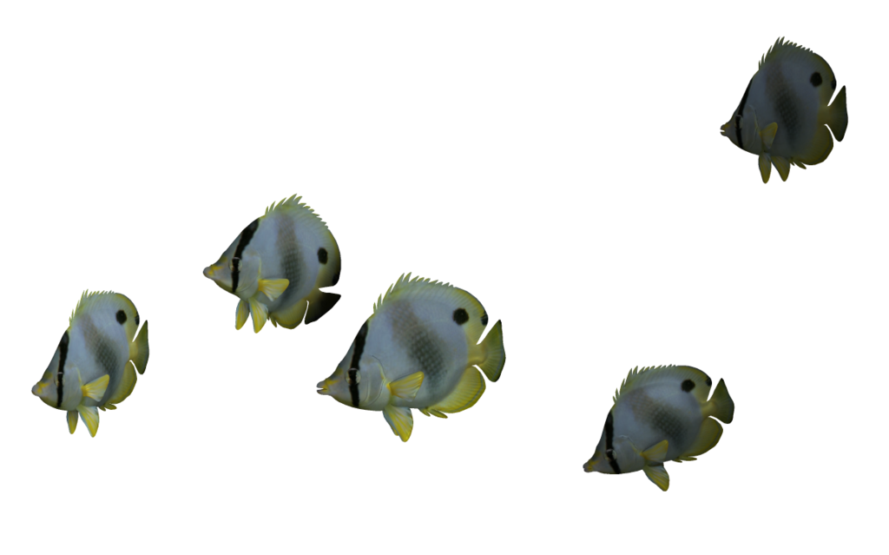

Marine fish, also termed saltwater fish or sea fish, are fish that live in seawater. Saltwater fish can live solitarily or in a large group called a school.[1] Saltwater fish are very commonly kept and raised in aquariums for research and as a hobby. Many marine fish are also fished for consumption,[2][3] or farmed in aquaculture. However, many saltwater fish species have been overfished and are otherwise threatened by marine pollution or ecological changes.
